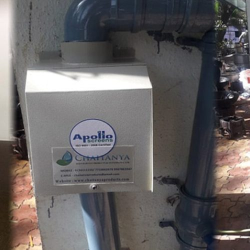
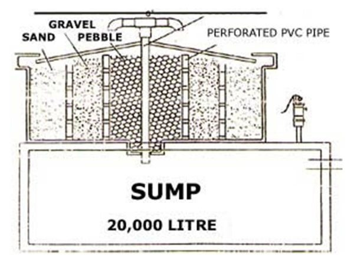

Rainwater Harvesting Filters – Safe Water, Safe Lives
The whole world is under crisis due to the Covid19 pandemic. Every country around the world is investing all its resources to keep going and fight against the deadly virus. Under these stressful circumstances, clean water scarcity is one of the fears of many nations, including India. Rainwater harvesting is now done at an extensive level in our country. This may provide some relief to many of us. But we also need to maintain the health of our harvested rainwater in these crucial times. Rainwater harvesting filter helps to remove physical impurities. Read here to know more about them.
Rains are beautiful; we all have drenched ourselves in the rain shower and tried to catch the rain droplets in our mouth. It seemed safe to drink the rainwater, and to some extent, it was safe. But since then, times have changed, more importantly, the environment has changed. When we started harvesting rainwater on our rooftops or in percolation tanks, the stored water was not trusted to be drinkable in its raw state. The stored water accompanies contaminants which include algae, air pollution, bird excrement, leaves, sand, and dust. Hence, the harvested water needs to undergo filtration & disinfection processes, if it is to be used for domestic purpose.
Basics of filtration
Filtration is a part of every rainwater harvesting system.
The capabilities of the rainwater harvesting filters can be estimated by the smallest particle size they are capable of filtering. And it goes without saying, the smaller the micron size, the better the filter.
Application of Rainwater Harvesting Filters in India
Rainwater harvesting systems in India are designed with rainwater filters at two levels:
- First, over the ground, the first flush devices, gutter screens, and other screening mechanisms are installed to keep away the debris from entering the conveyance system.
- At the second level, the filters work to remove entered physical contaminants from the storage tank. This filtration is followed by the disinfection process to clean the water from dissolved contaminants.
Types of Filtration Methods & Rainwater Harvesting Filters
The types of rainwater filters are classified on various points, such as their structure, type of the material used for building and its filtration materials. Rainwater harvesting filter design includes a chamber which is filled with filtering substances such as fibre, coarse sand, and gravel layers. These substances remove debris and dirt from water & stop them from entering the storage tank or recharge structure. To provide an additional level of filtration, charcoal is also used in some of the designs.
Here is a broad category:
1. Filters for Sump Tanks
PVC Drums :
These are single PVC built drum-like structure which has a steel mesh. The filter is usually placed below the downpipe from the rooftop and can also be placed adjacent to the sump tank. For a roof area up to 100 m², a drum of 90 liters capacity can efficiently filter the rainwater.

Double Drums Filter :
Double drum filters use two drums structure, interconnected to each other. When the roof area is bigger than 100 m², it is recommended to use two drums as a filter since the number of impurities increases with the roof area.

2. Filters for Ground-level Tank
Integrated sand filters :
Sand filtration is highly effective in treating groundwater to remove dissolved minerals and impurities such as iron, manganese.
The ‘porous’ nature of a sand layer traps particles present in water.The composition of simple sand filter includes the top layer of coarse sand, followed by a 5-10 mm size of gravel layer, which is then followed by another 5-25 cm layer of gravel and boulders: finer the sand, the better output water quality.

Ferro cement filters :
These are circular or square-shaped cemented structure tanks, usually of 1000-2000 litre capacity. It requires hessian cloth, chaff (waste from agricultural produce), wire mesh, mild steel bars, cement and sand for its construction.

Rooftop Online Filter:
Rooftop Online Filter works on proven technology of shearing action of special designed screen which provide cutting action to water that comes over it.
- These are used to capture rainwater from the catchments and stored in tanks or recharge pits.
- The drain line of roof is directly connected with inlet of filter.
- The inlet of roof drain is fitted with inlet of filter.
- The outlet is connected with pipe-line of storage tank and recharge pit.
- At the first rain the water is bypassed from the first flush chamber.
- Once the first flow passes the bypass valve is closed.
- Rainwater comes on the filter & filtered clear water passes through outlet pipe.

Stainless steel filter:
“Vee-Wire” Stainless steel filters are generally taken as a water filter for borewell recharge structures. It is also used to filter rainwater for sump/storage tanks.

What is Vee-Wire Screen?
Vee-Wire Screens are fabricated in Pipe Form from wires.
All Welded Wedge Wires Screen is made from two elements – Outside V-shape wire and Inside Longitudinal Rods.
The V-shaped Wire is spirally wrapped on a Cage made of Longitudinal Rods. The intersecting of shaped wire and rod is welded through each other by resistance welding. Due to resistance welding, the weld joined is very strong.
“Vee-Wire Screen Filter” is a Highly Acceptable Modern technology in Rain Water Harvesting. It eliminates conventional filtration systems, saves precious space, construction cost, and construction time for filtration tanks.
Vee-shaped slots produce jetting effect to inject recharge water into the aquifer.
Special Features:
- Made from Stainless steel – an anti-corrosive material.
- Raw water will first pass through Filter Media and then water enters horizontally into the Screen. Due to the above phenomena, the recharge process will continue efficiently, better than the conventional system (horizontal filtration)
- Cleaning becomes easy and practical due to its scientific design.
- Requires zero maintenance, hence it is a cost-effective solution.
- The efficiency of borewells does not reduce over the number of years due to its non-clogging design.
- Continuous slots give a large percentage of open area, enhancing the filter capacity, which means maximum recharge rate.
- It is easy to install, hence saves money, time, and energy.
The choice of Rainwater Harvesting Filters is dependent upon a few factors –
Location in the RWH System:
First filters in a system are expected to remove heavy solid pollutants in series, hence a Jali with 10 mm followed immediately by a 1 mm or less filter is advisable.Size of the RWH system
For large rainwater harvesting systems such as wells and irrigation sites, comparatively finer filters should be used to eliminate sand and large particles.
Large rooftops area
When rainwater is harvested in a large rooftop area, the filtering system should accommodate the excess flow. For the purpose, the rainwater filter system is designed with three concentric circular chambers- The outer chamber is filled with sand,
- the middle one is crammed with coarse aggregate,
- and the inner-most layer is stuffed with pebbles.

The filtration and disinfection of stored rainwater go hand-in-hand. Read more about the disinfection method in our other article titled “Converting Rainwater Into Potable Drinking Water”.
Rainwater Harvesting filter experts at N.S. Associates
With most modern filtration systems for rainwater harvesting, we have served the needs of our clients to the utmost optimization. The installation of rainwater filters is a part of our rainwater harvesting services and methods.